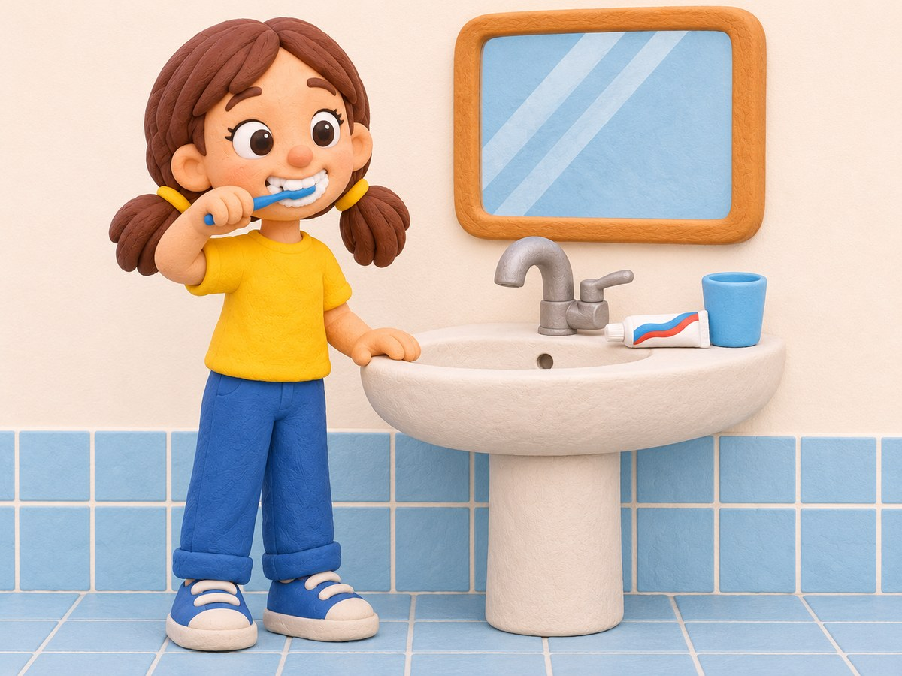

Составление предложений по сюжетной картинке: упражнение «Кто что делает?»
Десять сюжетных картинок с одним понятным действием. Ребёнок отвечает на три вопроса полными предложениями.
Начать упражнениеБесплатно, без регистрации
Для родителей
Простыми словами
Ребёнок рассматривает картинку и отвечает: «Кто это?», «Что он или она делает?», «Что ещё ты видишь?». Готового ответа на экране нет, поэтому ребёнок не читает, а говорит сам. Пример ответа открывается кнопкой «Показать пример ответа» для взрослого.
Зачем это нужно. Развиваем составление предложений по картинке, чтобы ребёнок перешёл от отдельных слов к полной фразе («Девочка чистит зубы») и мог рассказать, что происходит.
Для специалистов
Методическое описание
Упражнение развивает фразовую и связную речь по сюжетной картинке: называние персонажа, называние действия (глагольный словарь) и распространение предложения дополнением («чистит зубы зубной щёткой»). Три вопроса ведут от именной группы к предикату и далее к распространённому высказыванию. Образец ответа скрыт и показывается по кнопке только ведущему взрослому, чтобы не провоцировать чтение и повтор. Сюжеты: гигиена, сон, глажка, рисование, велосипед, готовка, мытьё обуви, полив цветов, кормление собаки, чтение.
Что развивает упражнение
- Фразовая речь: полное предложение по картинке
- Глагольный словарь (чистит, гладит, поливает, кормит, читает)
- Распространение предложения: дополнения и обстоятельства места
- Ответы на вопросы «кто?», «что делает?», «что ещё?»
- Внимание к деталям картинки, связь зрительного образа и речи
Кому и когда полезно
- Общее недоразвитие речи (ОНР): односложные ответы и бедный глагольный словарь
- Задержка речевого развития (ЗРР) на этапе фразовой речи
- Аграмматизм: согласование подлежащего и сказуемого
- Билингвы и дети за границей: построение предложений по-русски
- Подготовка к школе: рассказ по сюжетной картинке
Упражнение используется как дополнение к работе со специалистом. Подбор материала зависит от возраста и уровня речи ребёнка. Упражнение не ставит диагноз и не заменяет логопедическое обследование: диагноз ставит врач.
Как проводить упражнение
- Дайте ребёнку 10–15 секунд посмотреть картинку молча.
- Задайте три вопроса по очереди. Просите отвечать целым предложением: «Девочка чистит зубы».
- Если трудно, откройте «Показать пример ответа» и произнесите начало фразы, не показывая экран ребёнку.
- Переходите к следующей картинке. Потом можно вернуться и рассказать про картинку целиком без вопросов.
Занимайтесь 10–15 минут и хвалите за старание: это упражнение, а не экзамен.
Из чего состоит упражнение
- Сюжетная картинкаОдно понятное действие: девочка чистит зубы, мама гладит, папа моет кроссовки.
- Три вопросаКто изображён? Что он или она делает? Что ещё ты видишь?
- Пример ответаПоказывается кнопкой только взрослому. 10 картинок.

Об авторе
Упражнения подготовила Александра Карачинцева: психолог, поведенческий аналитик (ABA), специалист по запуску речи. Если ребёнок не говорит или говорит мало, можно прочитать о запуске речи или написать Александре.